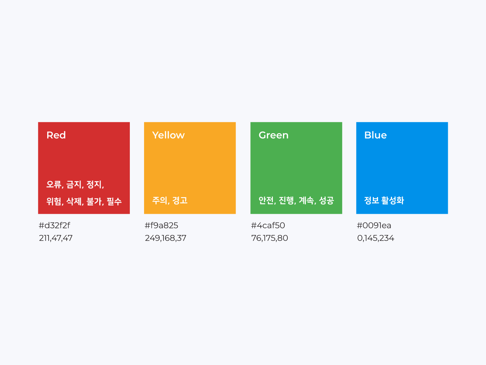
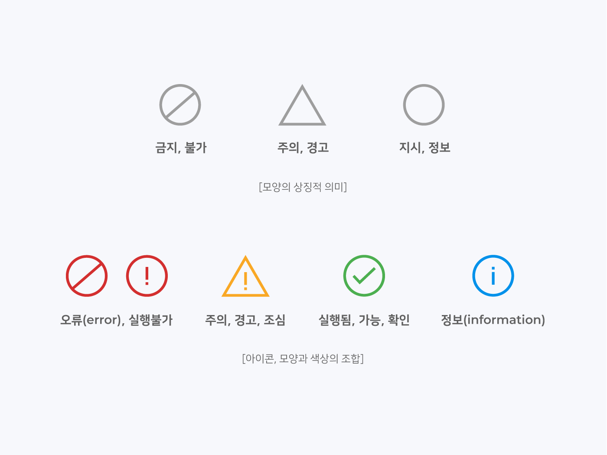
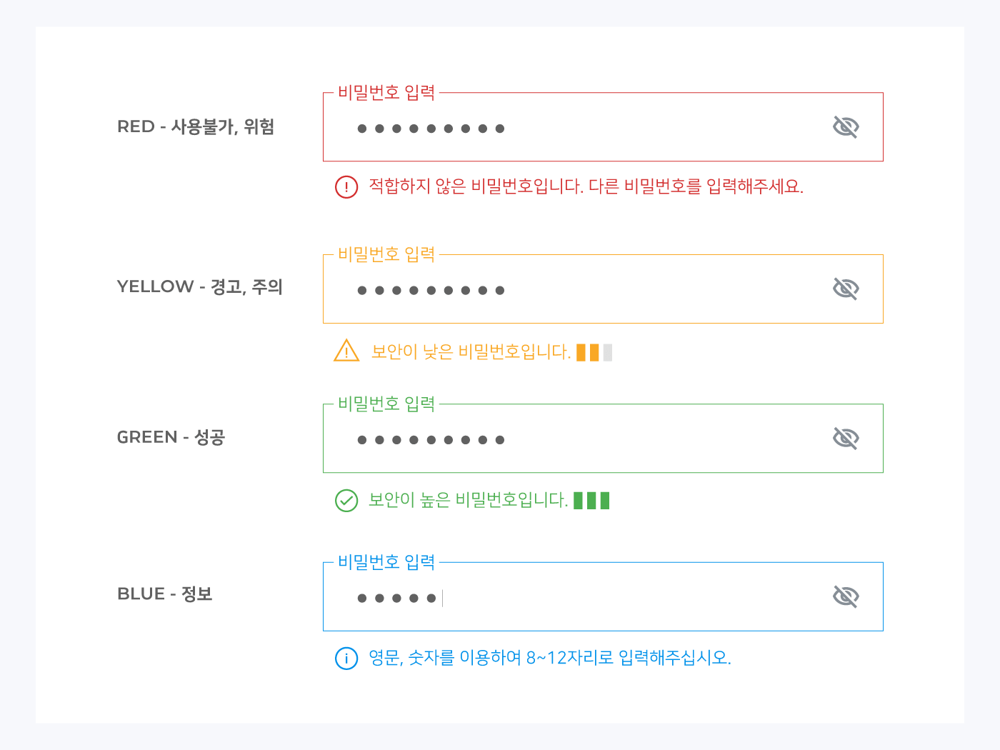

시스템 컬러
시스템 컬러란
시스템 컬러는 상태의 의미를 전달하는 컬러로 사용자에게 직관적으로 시스템의 상태를 알려주는데 효과적 입니다.
시스템 컬러의 의미해석
컬러의 해석은 문화나 경험에 의해서 달라질 수 있으나 UNESCO 도로표지판 및 신호에 대한 비엔나협정에서 다음과 같은 색상들의 상태의미를 국제적으로 표준화시켰습니다. 국내에서는 교통관련정보 외에도 UI 디자인(인터페이스 디자인)에 이러한 표준을 사용하여 사용자에게 직관적으로 시스템 상태를 보여줍니다.
그러나 웹접근성에 따르면 색상으로만 의미를 전달하기보다는 아이콘이나 바와 같은 형태 또는 글을 같이 기재해주는 것이 좋습니다. 이때 모양도 상징적인 의미를 가지고 있으므로 색상과 모양이 함께 부합하는 조합을 사용하는것을 권장합니다.
오류는 프로그램 자체를 실행할 수 없게 만드는 심각한 문법상의 오류를 말하는 것입니다. 경고는 컴파일상의 문제는 없지만(실행은 가능하지만) 실행중에 잘못된 결과를 나타낼 수 있는 부분에 대한 사전 경고입니다. 따라서 오류일때는 빨간색 원, 경고일때는 노란색 삼각형의 사용을 권장합니다. 도움말이나 정보는 파란색 원을 사용합니다. 확인이나 성공은 초록색 원을 사용합니다.
색상을 이용하여 직관적으로 상태를 나타내며 웹접근성에 따라 아이콘과 헬퍼텍스트를 추가한 예시입니다.
404오류 페이지는 실행시킬 수 없는 페이지 이므로 노란색 삼각형(주의) 아이콘이 아닌 빨간색 원형(오류) 아이콘으로 표기하는 것을 권장합니다.